MOOD BOARD
Any aesthetic, artistic, or cultural styles that my design might conform to.
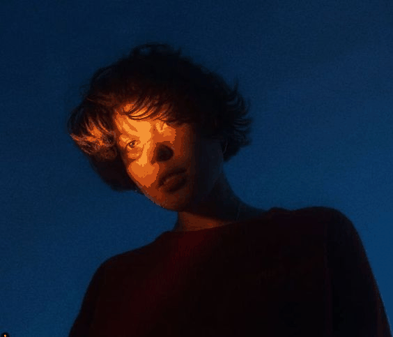
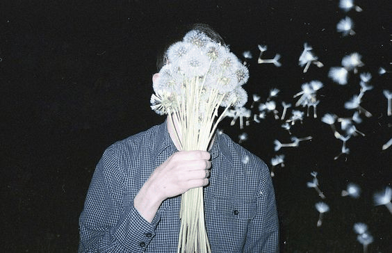
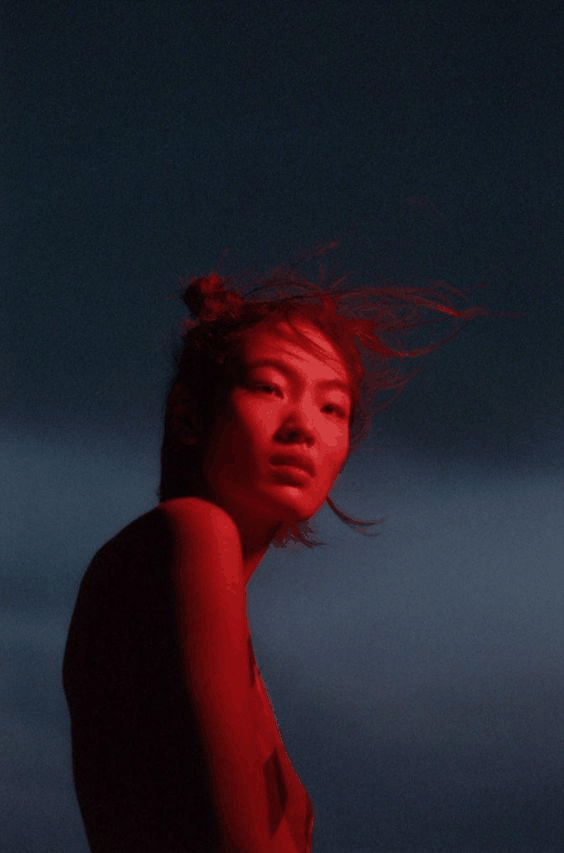
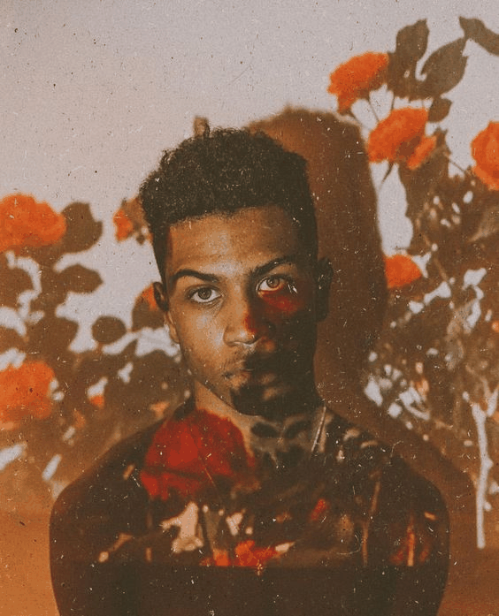
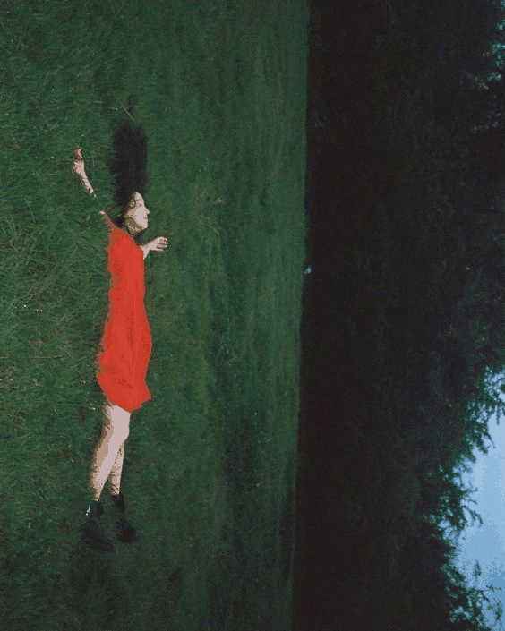
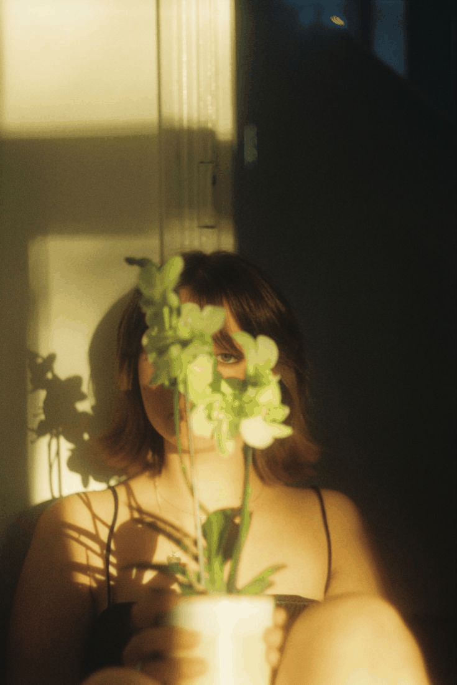
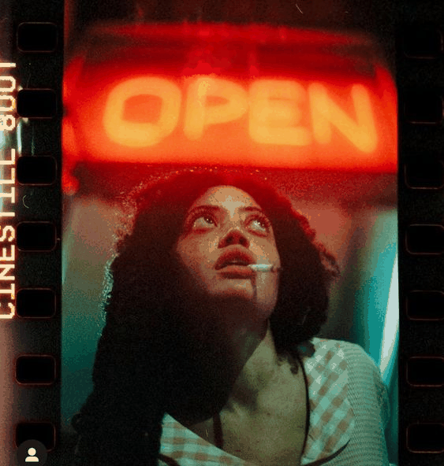
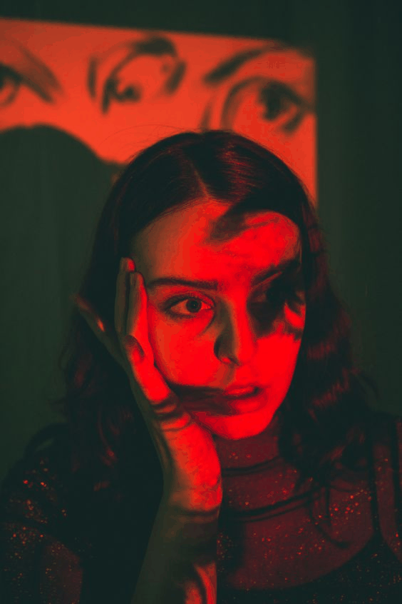
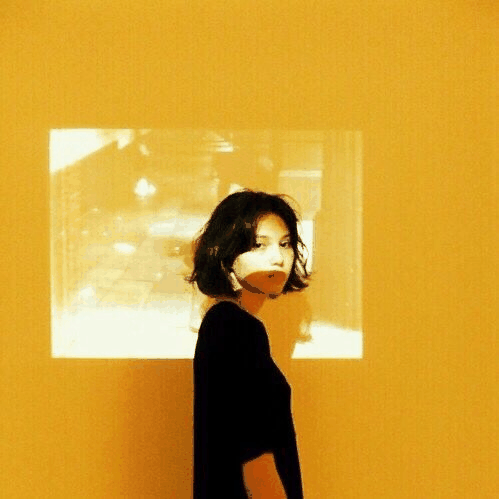
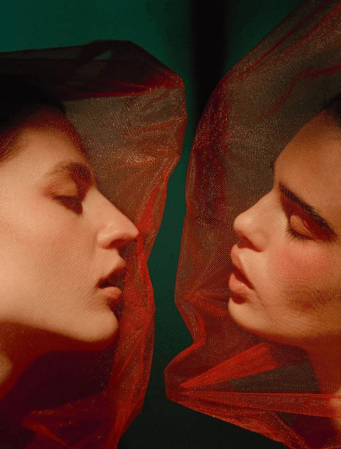
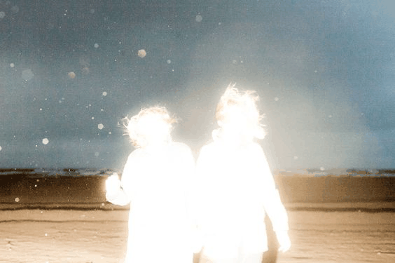
SOURCES : (17/2/24)
https://www.pinterest.com.au/pin/81627811989664729/
https://www.pinterest.com.au/pin/3799980928359423/
https://www.pinterest.com.au/pin/516436282286374792/
https://www.pinterest.com.au/pin/7599893114459389/
https://www.pinterest.com.au/pin/3096293483347989/
https://www.pinterest.com.au/pin/1477812372303359/
https://www.pinterest.com.au/pin/68961438046168676/
https://www.pinterest.com.au/pin/442549100866905711/
https://www.pinterest.com.au/pin/14566398786166407/ ]
Common features of my mood board include various warm hues with high contrast and a female subject. I want to continue to explore what elements work best to establish my themes. Will I stick to warm hues or will cool tones and desaturated imagery work better? who will my subject be and what significance does it have? I will continue to consier these types of features throughout my preproduction to converge my ideas in a meaningful way.
CONVENTIONS OF VISUAL STYLE
COLOUR USAGE
(18/2/24) Colour usage within the genre of retro surrealism is a stand out feature that helps to establish mood and emotion. Colour can be used to complement, contrast, highlight and establish visual hierarchy; creating an overall mood or emotion. In addition to this, different colours can imply different emotions:
For each of my photographs, I intend to use a combination of ambient light (the colour will vary depending on the emotion I want to provoke) in addition to a projected hue / photograph / video to create meaning and a visually intricate and unique photograph.
HIGH CONTRAST
Duality between objects, subjects and colour tones is an essential factor is engaging and capturign audiences. Contrast creates a focal point for viewers to draw their attention towards. It can also be used to highting key contextual information which assists in creating meaning. My overall aesthetic utilises dimly lit spaces, which helps to highlight areas of light (mostly on or around the subject)
FACIAL EXPRESSION
Facial expression helps to add another layer of depth to phtotographs and videos. Audiences have a natural eye for identifying expression: through positioning of the mouth (smiling, smirking, still, tensed), eyes (size of the iris, which way is the subject looking: straight (confronting, scary or direct), to the side (judgement, avoidant or curious), up (curious, ignorant or innocent) or eyes down (avoidant, anxious or upset)
FRAME WITHIN A FRAME / FOCAL POINT
Through my exploration of projectors, high contrast, and retro photography, I have found that the focal point is a key element in capturing audience attention. The compositional dynamics of this genre of photography highlight that using strong, contrasting hues directs viewer attention towards certain elements.
Projectors display images in a rectangular, confined area. This means that I could use the technique of 'frame within a frame' to further engage audiences through guiding viewer attention. One goal is to focus attention to the subject or scene within the inner frame, highlighting its importance within the larger story. This method adds levels of depth, directing the viewer's attention and creating a sense of importance or intimacy to the enclosed element. Isolating the topic within a frame makes it stand out more against its surrounds, allowing for a greater emphasis on narrative significance or emotional impact.
Furthermore, "frame within a frame" can create a sensation of enclosure or confinement by portraying themes like isolation, secrecy, or protection. This approach can be used to represent characters' psychological states or to create distinct moods or atmospheres inside a scene. Overall, I will be using this feature of projector photography to establish meaning and visual appeal within my series of photographs.